Hub Boriken
2026Mixed-use community hub balancing program density with street-level porosity.
- Type
- Graduate design studio
- Role
- Individual project
- Tools
- Rhino · Revit · Enscape
- Status
- Completed studio project

01 / Process
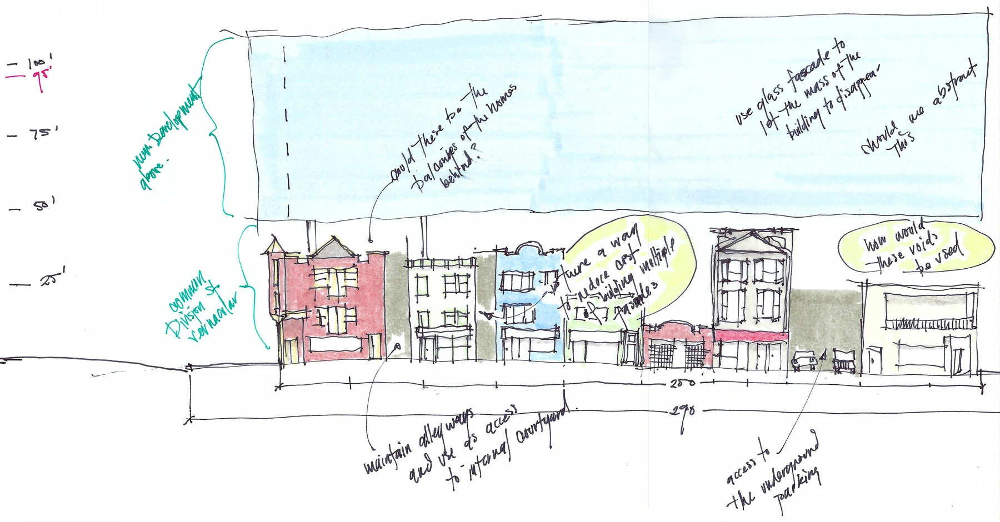
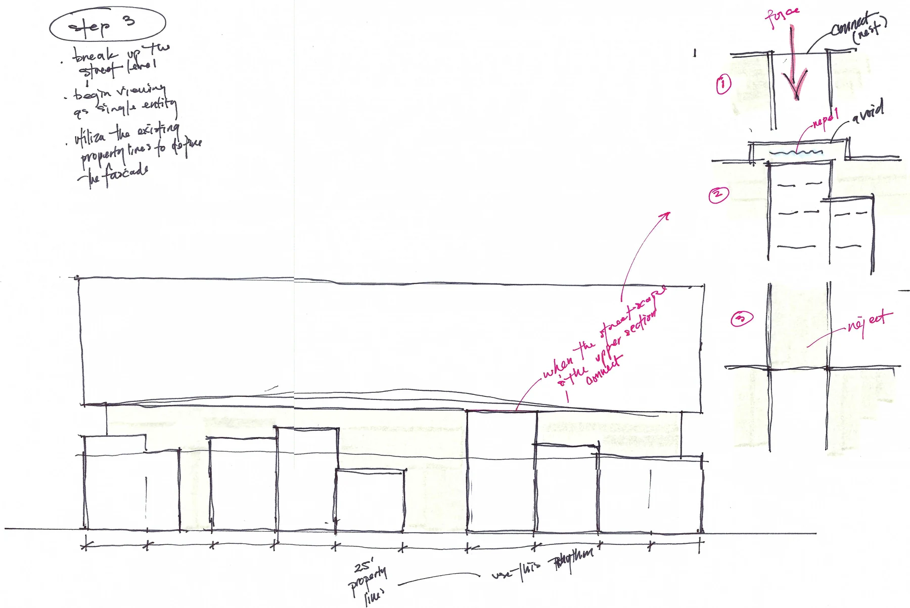
Method
Initial concepts focused on maintaining the walking cadence of the street by retaining the 25' allotment spacing and commercial frontage. Apartments would be lifted off the street. Care was taken to reduce mimicry (left) by abstracting the forms (right).
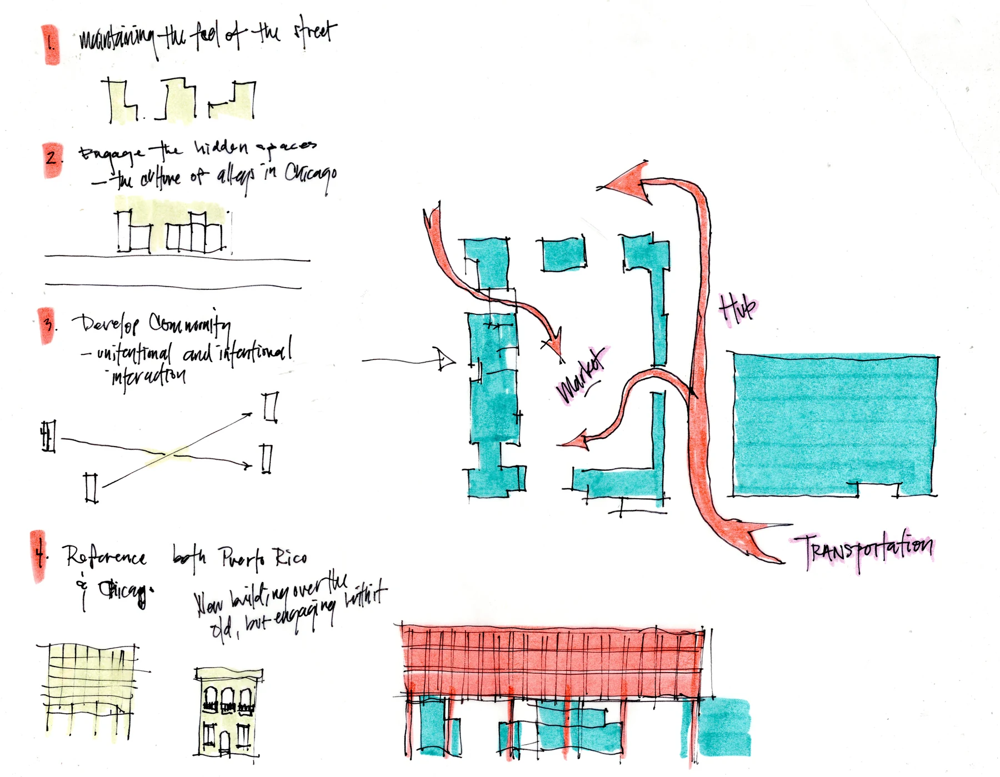
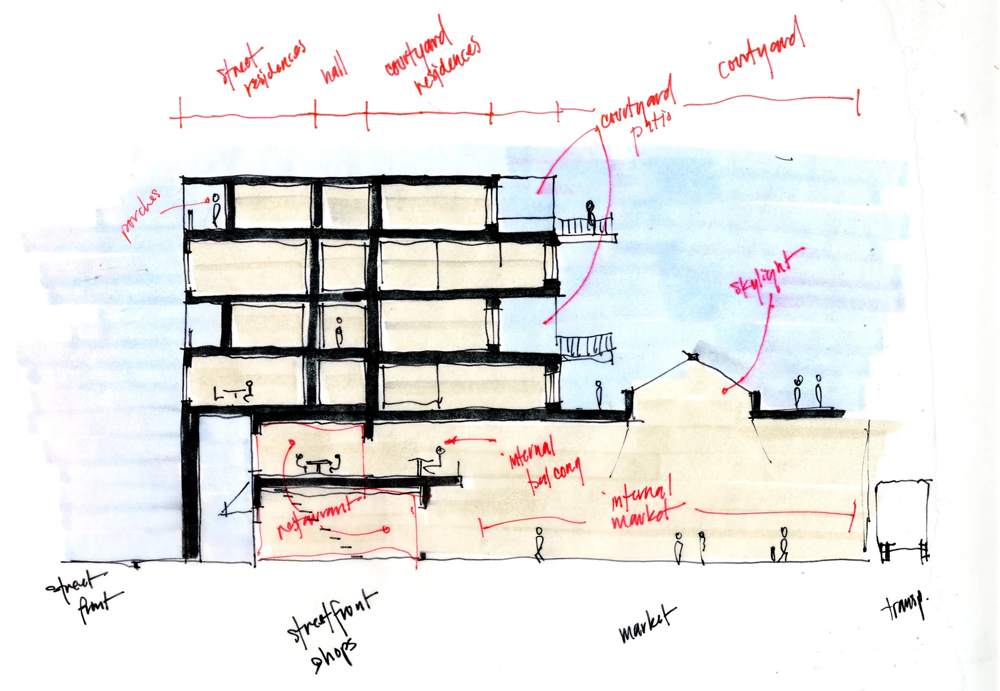
Program
Set behind the street frontage, shops would open onto an internal market. Taíno culture was built around a communal gathering space.
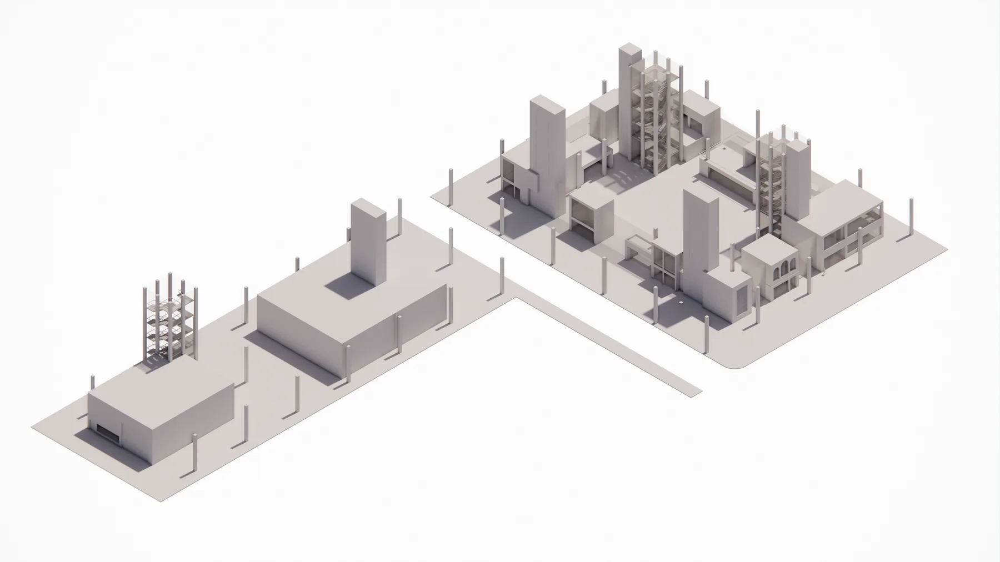
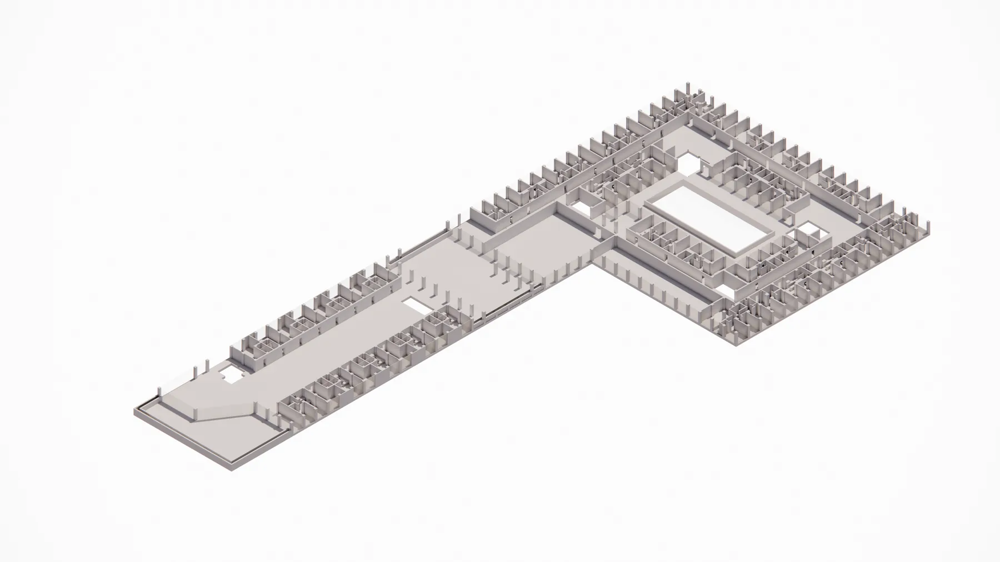
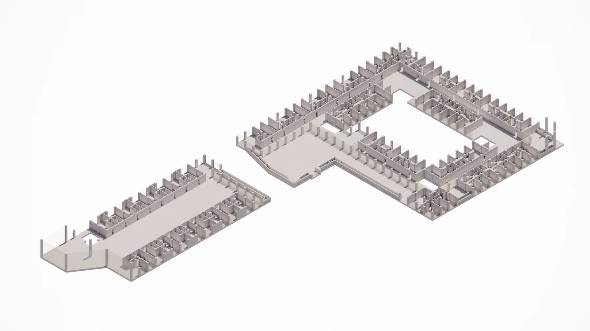
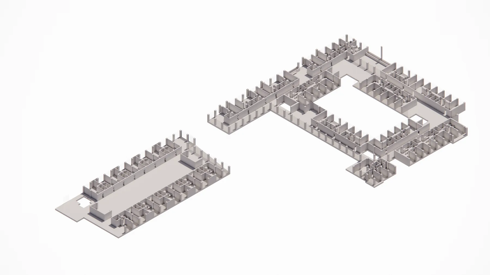
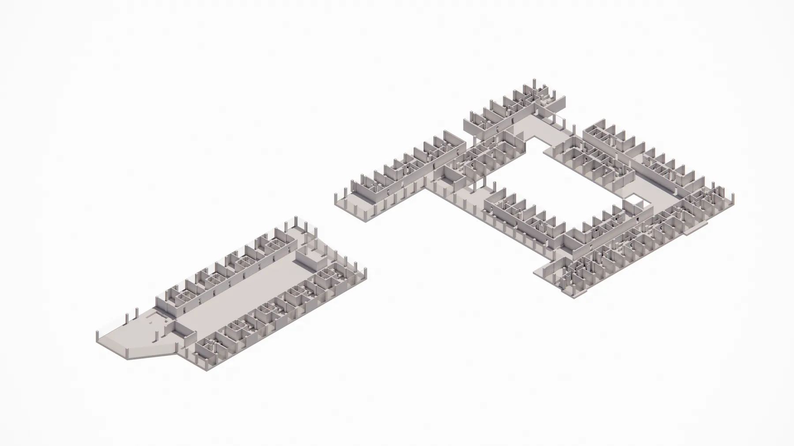
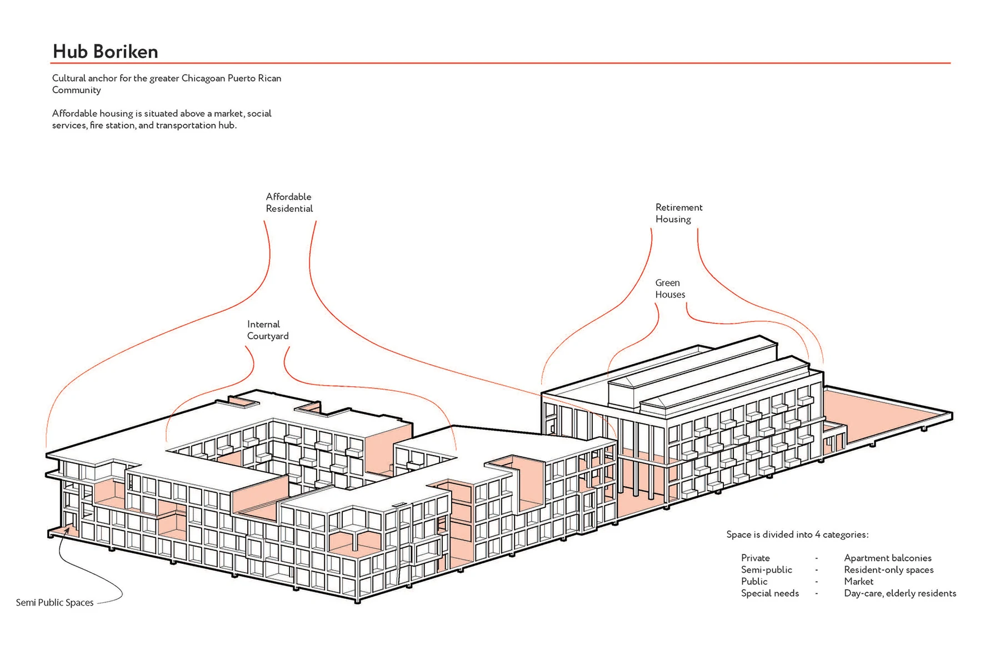
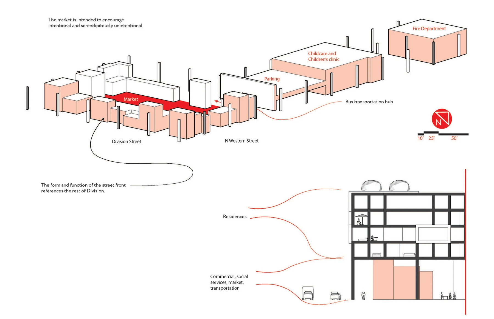
02 / Outcome
Result
Initial conceptual overlooking the central courtyard.
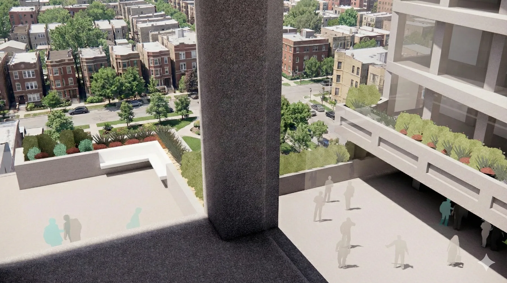